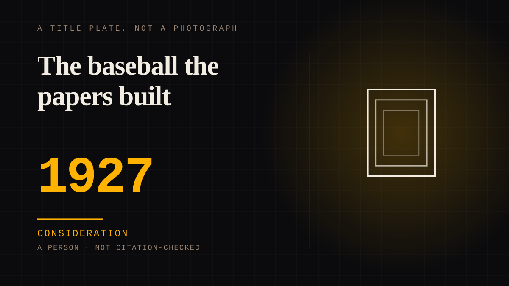

A person · 1927 · Radio
The baseball the papers built
In 1927 Babe Ruth hit sixty home runs and became the most replayed figure in a game most fans knew through print. His bylined column ran in syndication, much of it ghostwritten, and radio was beginning to carry him into rooms the stadium never reached. The 1920s press manufactured a 'hot romance' and he was its star.

The season the man and the persona arrived together. Ruth's 1927 season - sixty home runs in a 154-game schedule, a single-season record that stood until Roger Maris hit sixty-one in 1961, with the Yankees' Murderers' Row around him - is the on-field anchor this entry leans on without being about. The subject is the parallel figure the press built, because most of the people who loved him never saw him play.
The printed voice was another man's.
Through the 1920s Ruth's byline ran across the country in syndicated columns and serials, and much of that copy was ghostwritten - the 'Babe Ruth' column was substantially the work of Christy Walsh, his agent, who organised the ghosted pieces under Ruth's name. A reader opening the sports page met a voice signed 'Babe Ruth' that Babe Ruth had not written, which is the manufactured reply end of a one-sided tie arriving in sports journalism: the attention felt answered, and the answer was an agency.
Radio and the syndicated page made the tie work at distance.
Baseball went on the air in the 1920s, and Ruth's name travelled ahead of him by broadcast and by print - this entry records the 1920 film 'Headin' Home' as the star's celluloid echo of the same reach. The deeper claim, read from the thesis this entry draws on, is that the newspapers of the 1920s manufactured what one account calls a 'hot romance between sport and the public'. The counter-argument - that Ruth's fame was earned by a bat, not by columns - is real and kept on the entry; the point is narrower, that the relationship hundreds of thousands had with him ran through contributed copy and broadcast names rather than through a seat in a ballpark.
Consideration. The part where somebody stops and thinks. The research, the diagnosis, the ethics, the lawsuits, the regulators. Roughly fifty years of arguing with itself about whether this is a relationship.
Where it sits
1900 1900-1949 · 1927 1949
Provenance · 2 source record(s)
- unverifiedThe thesis treats the press and radio construction of Ruth across the 1920s: the ghostwriting of his bylined columns, syndication, the early radio broadcasts of baseball, and the claim that the newspapers of that decade manufactured a 'hot romance between sport and the public'. Read through a search index rather than fetched, so the record is unverified: a reader can open this page, this agent did not.J. C. Trimble, "Babe Ruth: The Media Construction of a 1920's Sport Personality" (Colby College senior thesis ↗
- unverifiedThe baseball facts the entry rests on: the 1927 season's sixty home runs in a 154-game schedule, the single-season record until Maris's sixty-one in 1961, Murderers' Row, and the 1920 motion picture 'Headin' Home'. Read through a search index rather than fetched, so the record is unverified: a reader can open this page, this agent did not.Encyclopaedia Britannica, "Babe Ruth" ↗
Not yet stood behind. The entry is real. A person has not read the citation and confirmed it, so treat the date as approximate until they do.
Connected · 2 out, 1 in
It sits in
The full timeline → · The database → · See it in the atlas →